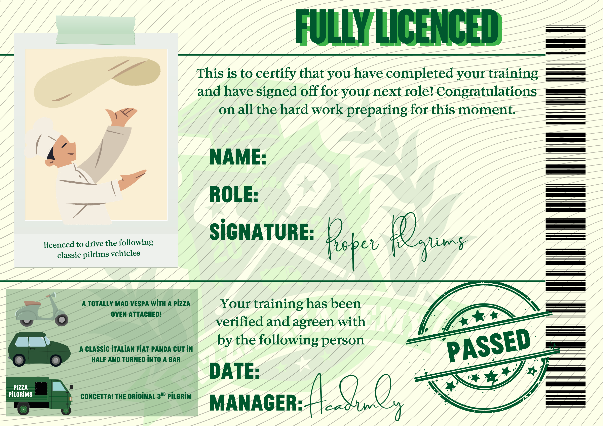

Sign-off – Supervisor
Interaktive Beförderungsbewertung
Diese Datei wird gemeinsam von der teilnehmenden Person und der direkten Führungskraft ausgefüllt. Geht mit der Schaltfläche „Weiter“ durch jede Seite. Hakt jede unbewertete Show-&-Tell-Aufgabe ab, ergänzt die Bestätigung des Training Managers und bewertet anschließend jede Frage von 1 bis 5 mit Kommentaren.
Jeder Unterbereich hat einen eigenen Durchschnittswert. Auf der letzten Seite werden die Durchschnittswerte aller Bereiche berechnet und das personalisierte Zertifikat angezeigt.
Fragen & Antworten – Bewertungsleitfaden
1. Noch nicht erreicht 2. Feinschliff erforderlich 3. Läuft gut 4. Großartig 5. Golden Slice
Übersichtsseite
Trage vor Beginn der Bewertung die Angaben zur teilnehmenden Person ein.
Endergebnisse & Zertifikat

Supervisor